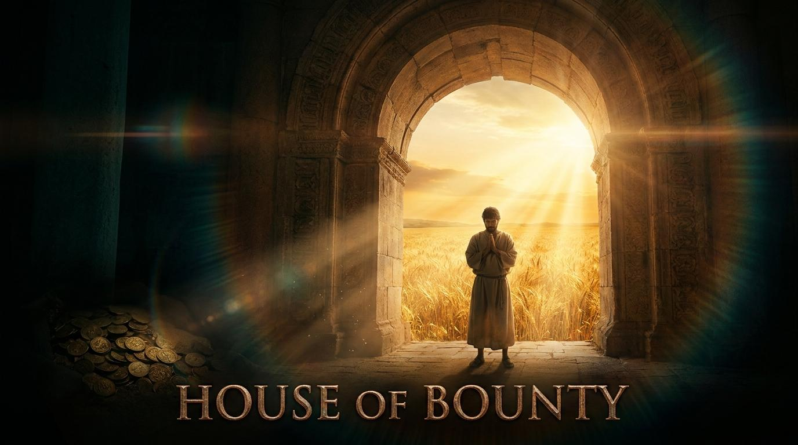

📜 禱告詞
主啊，祢在天上，我們在地下；祢是創造萬有的主宰，我們是短暫如微塵的客旅。求祢赦免我們常在祢面前喋喋不休，卻忘記安靜聆聽；赦免我們用無盡的貪婪去填補內心的空虛，卻忽略了唯有祢是真正的滿足。奉主耶穌基督的聖名禱告，阿們。
💡 經文解析大綱
第一段：敬拜的智慧——少說多聽的敬畏
關鍵字：冒失 (Bahal)、聽 (Shama)。解析：敬拜非指揮上帝，而是降服。如對講機需鬆開發話鍵才能聆聽。
第二段：財富的迷思——無法填滿的貪婪
關鍵字：貪愛 (Aheb)、虛空 (Hebel)。解析：人類試圖用有限物填補無限空洞，卻如渴飲海水，越喝越渴。
第三段：滿足的秘訣——領受恩典的喜樂
關鍵字：恩賜 (Mattath)、分 (Cheleq)。解析：將擁有視為恩賜而非抓取，在當下的勞碌中經歷神的喜樂。
📖 講章文稿
親愛的弟兄姊妹，我們生活在極度喧囂的時代。我們的心就像一個無底洞，如果你試圖用有限的物質去填補無限的空虛，就像喝海水解渴。
「敬拜的起點，是靜默；是帶著敬畏的心，近前聆聽。」
真正的出路在於視角的轉換。當你緊握雙拳想要抓住，你最終會兩手空空。當你攤開雙手，承認一切皆為神的「恩賜」，你就能在平凡的勞碌中，經歷無人能奪去的喜樂。

💬 屬靈佳句
- 1. 「人若不能在上帝面前靜默，就無法真正聽見上帝的聲音。」— 陶恕 (A.W. Tozer)
- 2. 「人心是一個製造偶像的工廠，而金錢往往是其中最閃亮的那一尊。」— 約翰·加爾文
- 3. 「對於金錢的正確態度是：盡力去賺取，盡力去節省，並盡力去給予。」— 約翰·衛斯理
- 4. 「如果你把金錢當作你的神，它會像魔鬼一樣折磨你。」— 提摩太·凱勒
- 5. 「恩典就是上帝以祂自己來滿足我們的需要，使我們在祂裡面找到真正的喜樂。」— 潘霍華
- 6. 「禱告不是克服上帝的不情願，而是抓住上帝的最高意願。」— 馬丁·路德
- 7. 「一個緊握雙手的人，無法領受上帝的恩典。」— 盧雲
- 8. 「我們在世上最危險的陷阱，是在物質中失去了敬畏。」— 約翰·史托德
- 9. 「安靜與獨處是屬靈生命不可或缺的操練。」— 魏樂德
- 10. 「敬拜不是表演，而是生命降服。」— 畢德生
網路資料可能出錯，請小心查證、謹慎使用。